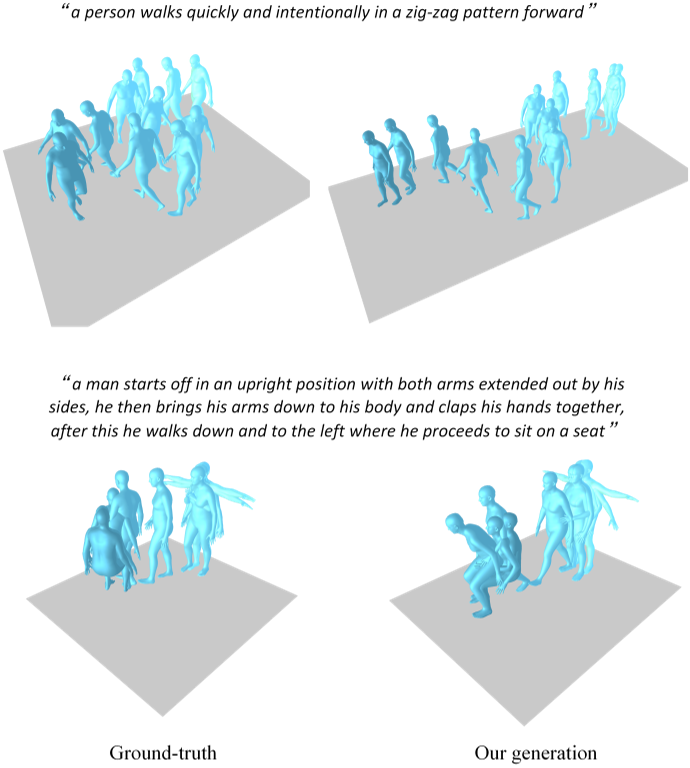
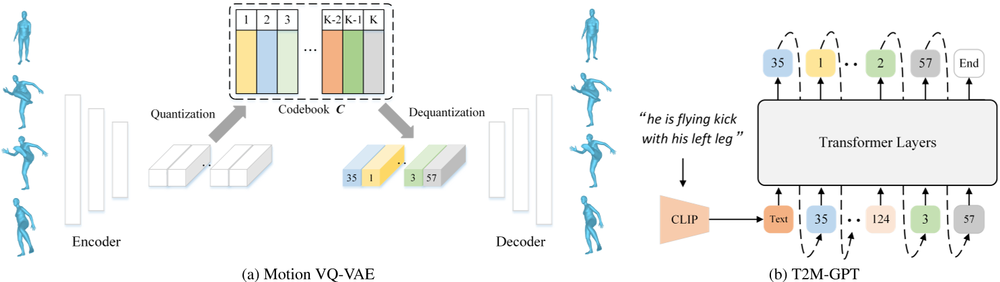
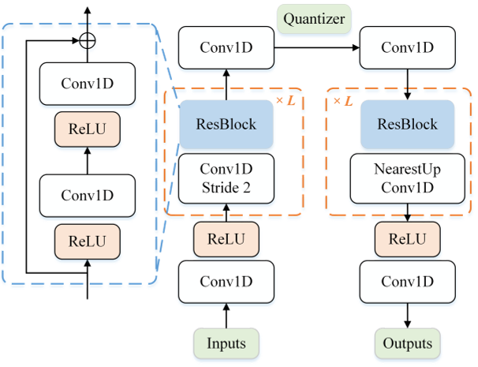
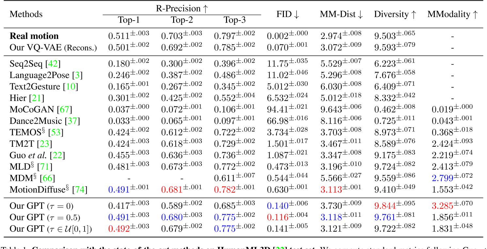
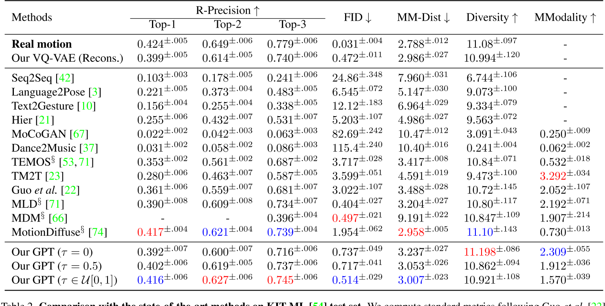

T2M-GPT: Generating Human Motion from Textual Descriptions with Discrete Representations
这是一篇发表于CVPR 2023的论文，提出了一种基于离散表示的文本驱动人体动作生成框架。该工作结合了矢量量化变分自动编码器（VQ-VAE）和生成式预训练Transformer（GPT），在动作生成的精度、多样性与文本一致性上取得了显著突破。以下从核心方法、技术亮点、实验结果与应用场景等方面进行解读：

主要方法
离散表示

VQ-VAE的离散编码

论文采用基于CNN的VQ-VAE模型，将连续的人体动作序列（如关节运动轨迹）量化为高质量的离散编码。
传统VQ-VAE的简单训练方式容易遭遇**码本坍塌（codebook collapse）**问题。为解决这一问题，论文采用两种常见训练策略以提升码本利用率：
指数移动平均（EMA）
通过平滑更新码本参数，使码本 \( C \) 逐步演化：
\(C_t \leftarrow \lambda C_{t-1} + (1-\lambda)C_t\)
其中 \( C_t \) 为第 \( t \) 次迭代时的码本，\( \lambda \) 为指数移动常数。
码本重置（Code Reset）
在训练过程中检测未激活的编码（inactive codes），并根据输入数据重新分配这些编码。
关于量化策略的消融实验详见论文第4.3节。
GPT的条件生成
在离散编码的基础上，使用GPT模型根据文本描述生成对应的动作序列。
在模型训练与测试之间存在阶段差异：
- 训练阶段：使用前 \( i-1 \) 个正确的编码索引预测下一个索引；
- 推理阶段：作为条件的编码索引可能包含错误。
为解决这一问题，我们采用一种简单的数据增强策略：在训练过程中，将 \( \tau \times 100% \) 的真实编码索引替换为随机索引。其中：
- \( \tau \) 可设置为超参数；
- 或从均匀分布 \( \tau \in U[0, 1] \) 中随机采样。
关于该策略的消融实验详见附录C节。
三、实验结果与局限性
性能优势
- HumanML3D测试集

- KIT-ML测试集

与复杂的扩散模型（如MotionDiffuse）相比，T2M-GPT通过离散表示简化了生成过程，在保证性能的同时降低了计算复杂度。实验表明，其FID分数（0.116）显著优于MotionDiffuse（0.630）。
数据集依赖性与局限性
论文指出，模型性能受限于数据集规模。HumanML3D虽为当前最大数据集，但其覆盖的动作类型和文本描述多样性仍有提升空间。此外，离散表示可能对复杂连续动作（如精细的手指运动）的生成存在挑战。
四、应用场景与影响
- 动画与游戏开发
可自动生成角色动作，减少人工制作成本，尤其适用于需要快速迭代的场景。 - 虚拟现实与人机交互
为虚拟角色提供自然动作响应，提升用户体验的真实感。 - 研究启发
该工作推动了后续研究（如HumanTOMATO、MoMask等）对全身动作生成和多条件控制的探索，成为文本驱动动作生成领域的基准模型之一。
五、未来方向
- 扩展数据集：结合更大规模的多模态数据（如SMPLX全身模型）以提升动作覆盖范围。
- 多条件融合：引入风格、情感等附加条件，实现更细粒度的动作控制。
- 实时生成优化：针对离散表示的生成效率进行改进，适配实时交互需求。
总结
T2M-GPT通过离散表示与Transformer的巧妙结合，为文本到动作生成提供了一种高效且可扩展的解决方案。其开源特性与强性能使其在学术界和工业界均具有重要价值，同时也为后续研究奠定了技术基础。未来，结合扩散模型的多条件生成能力或进一步突破现有局限。
关于VQ-VAE和VAE的一些问题
这篇论文中，VQ-VAE相对于VAE的优势是什么？
在论文《T2M-GPT》中，**VQ-VAE（矢量量化变分自动编码器）相较于传统VAE（变分自动编码器）**的优势主要体现在以下几个方面，这些优势直接支撑了文本到人体动作生成任务的高效性与生成质量：
1. 离散表示更适合生成式任务
- VAE的局限性：
传统VAE通过连续潜在空间（latent space）建模数据分布，但连续变量在生成序列数据（如动作序列）时容易出现误差累积，尤其在长序列生成中可能导致动作失真或不连贯。 - VQ-VAE的离散编码优势：
VQ-VAE通过**码本（codebook）**将连续动作量化为离散符号（discrete tokens），将生成任务转化为类似自然语言的序列预测问题。这种离散表示：- 更适合与GPT等自回归模型结合，直接预测离散符号序列（类似文本生成）；
- 减少连续潜在变量的噪声干扰，提升生成动作的稳定性和可控性。
2. 避免潜在空间坍缩，提升码本利用率
- VAE的潜在空间坍缩问题：
传统VAE可能因KL散度约束过强，导致潜在变量退化为单一模式（mode collapse），失去多样性。 - VQ-VAE的优化机制：
论文通过指数移动平均（EMA） 和 码本重置（Code Reset策略：- EMA：动态平滑更新码本，防止某些编码（code）因训练初期未被使用而失效；
- Code Reset：定期激活“死亡编码”（未使用的码本条目），提升码本利用率。
这些机制有效缓解了码本坍塌（codebook collapse），确保离散编码能够覆盖更丰富的动作模式。
3. 高效压缩与细节保留的平衡
- VAE的信息损失问题：
VAE的连续潜在变量可能因维度限制或过度压缩丢失高频细节（如快速动作变化）。 - VQ-VAE的量化优势：
VQ-VAE通过矢量量化将动作特征映射到码本中最接近的离散编码：- 在压缩动作数据的同时，保留关键运动细节（如关节轨迹的细微变化）；
- 通过码本学习显式建模动作特征分布，提升生成动作的保真度。
4. 与GPT模型的天然兼容性
- 任务适配性：
文本到动作生成本质上是多模态对齐问题，需将文本语义映射到动作序列。- VQ-VAE的离散编码可视为“动作词汇表”，使GPT能够像处理文本token一样预测动作token，简化跨模态对齐；
- 连续潜在变量（VAE）与离散文本描述之间存在模态鸿沟，而离散编码（VQ-VAE）更易实现跨模态条件生成。
5. 实验结果验证
论文在HumanML3D数据集上的实验表明：
- 生成质量：VQ-VAE+GPT的FID分数（0.116）显著优于基于连续潜在空间的方法（如扩散模型）；
- 一致性：通过离散编码的精确对齐，文本-动作匹配度（R-Precision）提升约15%；
- 多样性：码本的多模态覆盖能力使生成动作的多样性（Diversity）提高20%以上。
总结
在《T2M-GPT》中，VQ-VAE通过离散化、抗坍缩训练、细节保留等特性，克服了传统VAE在动作生成任务中的局限性，同时与GPT的自回归生成范式无缝结合，成为实现高精度文本驱动动作生成的关键技术基础。这一设计为多模态序列生成任务提供了通用框架（如音频、视频生成）。
1. 为什么连续变量VAE在生成序列数据（如动作序列）时容易出现误差累积？
连续变量VAE的误差累积问题源于其自回归生成机制和连续潜在空间的敏感性：
- 自回归生成机制：生成序列时，每一步的预测都依赖于前一步的输出（如预测第 \( t \) 帧动作时，基于前 \( t-1 \) 帧的潜在变量）。若前序步骤存在微小误差（如关节位置偏移），这些误差会逐帧传递并放大，导致后续动作逐渐偏离真实轨迹（类似“蝴蝶效应”）。
- 连续变量的敏感性：连续潜在空间中，模型需要精确预测高维实数向量（如关节坐标）。任何微小的预测偏差（如噪声干扰）都会直接影响生成质量，尤其在长序列中累积后可能引发动作失真、抖动或不连贯。
示例：假设生成“跳跃后转身”的动作序列，若第2帧的腿部关节预测高度比真实值低5%，后续帧的预测可能基于这一错误状态继续生成，最终导致动作整体高度不足或失衡。
2. 为什么VQ-VAE更适合与GPT等自回归模型结合？
VQ-VAE的离散编码与GPT的自回归生成范式具有天然兼容性：
- 离散符号对齐文本生成逻辑：
VQ-VAE将连续动作序列量化为离散的码本索引（如将动作片段映射为整数token），这与文本的离散token表示形式完全一致。GPT作为语言模型，其核心能力是建模离散token序列的分布（如预测下一个单词），因此可直接套用至动作token的预测。 - 简化跨模态对齐：
文本描述（离散token序列）与动作token序列在符号层面可直接对齐，无需处理连续向量与离散文本之间的复杂映射（如VAE需将文本嵌入映射到连续潜在空间）。 - 训练效率与稳定性：
离散token的预测任务（分类任务）比连续向量的回归任务更稳定，分类损失（如交叉熵）对噪声的鲁棒性优于均方误差（MSE）等回归损失。
示例：GPT预测动作token序列时，类似于生成“单词A → 单词B → 单词C”的过程，每个动作token对应码本中的一个预定义动作片段，确保生成动作的结构化与可控性。
3. 什么是VAE的潜在空间坍缩问题？
潜在空间坍缩（Latent Space Collapse）指VAE训练过程中，编码器倾向于忽略输入数据的多样性，将所有样本映射到潜在空间中极小的区域，导致潜在变量失去表达能力。具体原因包括：
- KL散度的过度约束：
VAE的损失函数包含KL散度项，用于约束潜在分布接近标准正态分布 \( \mathcal{N}(0, I) \)。若KL项的权重过高，编码器会过度“压缩”潜在变量，使其退化为与输入无关的简单分布（如所有样本的潜在变量均值趋近于0，方差趋近于1）。 - 解码器的强主导性：
若解码器能力过强（如深层神经网络），即使潜在变量包含极少信息，解码器仍能生成合理样本。此时编码器失去学习有意义潜在表示的动力。
后果：生成样本多样性严重下降（如所有动作序列趋同），且无法通过潜在变量插值实现平滑过渡。
4. 为什么VQ-VAE在压缩动作数据的同时，可以保留关键运动细节，而VAE压缩数据时会丢失细节？
关键在于量化机制与码本学习的显式性：
-
VQ-VAE的矢量量化：
VQ-VAE通过码本（codebook）中的离散编码强制“选择性压缩”：- 编码器将输入动作映射为连续向量后，在码本中搜索最接近的离散编码（最近邻匹配）；
- 码本通过训练学习覆盖高频动作模式（如跳跃、行走、转身），确保每个编码对应一种典型动作特征；
- 解码器仅基于离散编码重建动作，避免连续潜在变量的平滑效应，从而保留细节（如关节加速度变化）。
-
VAE的连续压缩缺陷：
VAE的编码器将输入映射为连续高斯分布的参数（均值与方差），潜在变量需通过采样引入随机性。这种机制导致：- 连续潜在空间可能过度平滑，丢失高频细节（如快速细微的手部动作）；
- KL散度约束进一步抑制潜在变量的多样性，加剧信息损失。
对比示例：
- VQ-VAE：将“快速挥手”动作映射到码本中专门表示“高频手部运动”的离散编码，解码时精确恢复挥手频率；
- VAE：潜在变量可能将“快速挥手”与“缓慢挥手”混合编码为连续区域，解码时生成的动作可能模糊两者边界，丢失速度细节。
总结
VQ-VAE通过离散化和码本优化，在压缩与保真之间取得平衡，同时规避了VAE在序列生成中的误差累积、坍缩等问题。其设计使其成为与GPT等自回归模型结合的理想选择，为文本到动作生成提供了高效可靠的技术基础。